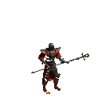

The Sorcerer's skill should be used in moderation, recharging a staff of mana can be handy for saving gold, but every time the staff is recharged the max number of charges is lowered by 1. This is unideal if you have a lot of gold and in higher levels where it's good to have more charges on your staves.
